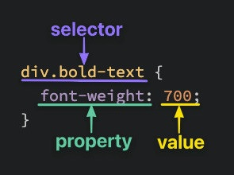

At the most basic level, CSS is made up of various rules. These rules are made up of a selector (more on this in a bit) and a semi-colon separated list of declarations, with each of those declarations being made up of a property:value pair.
This is where a preview for a post might go.